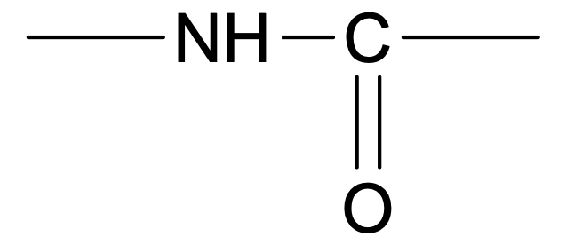
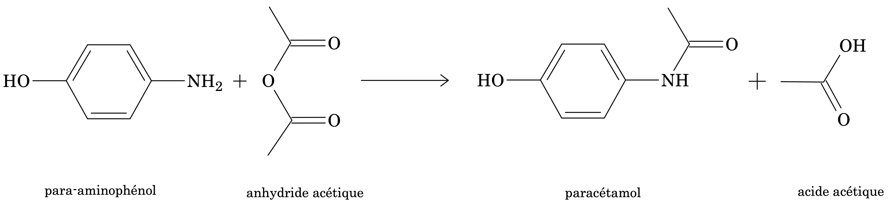
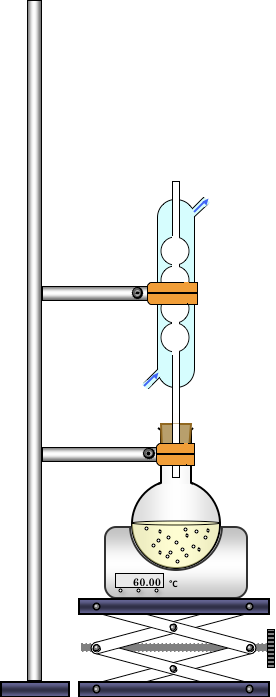

Documents
Le paracétamol
Le médicament
Le paracétamol (ou acétaminophène) est la dénomination commune d’un médicament d’usage très répandu, qui entre dans la composition de nombreuses spécialités pharmaceutiques telles que, par exemple, le Doliprane®, l’Efferalgan® ou le Dolko®. Il peut se présenter sous différentes formes ou conditionnements : sirops, poudres à diluer, suppositoires, gélules, comprimés effervescents, cachet, etc. Il fait effet environ 20 min après la prise du médicament, durant environ 4 heures et présente une remarquable tolérance à dose thérapeutique.
Le paracétamol a une activité analgésique (atténuation de la sensibilité à la douleur) et antipyrétique (lutte contre la fièvre) d’intensité comparable à celle de l’aspirine mais n’a pratiquement pas d’effet anti-inflammatoire. Il est utilisé dans les états fébriles et douloureux.
Le paracétamol n’a pas les effets secondaires de l’aspirine, ne provoque pas de lésion de la muqueuse gastrique et n’interfère pas avec l’agrégation plaquettaire.
Aspirine et paracétamol sont en général regroupés sous le terme générique d’analgésiques périphériques car ils agissent principalement au niveau de la lésion qui entraîne la douleur c’est à dire là où se situent les terminaisons des fibres nerveuses situées dans la peau, les muscles, les viscères, les articulations et les vaisseaux.
La Véganine®, médicament prescrit dans le traitement symptomatique de la douleur et de la fièvre quelles que soient leur origine et leur intensité, associe les propriétés analgésiques et anti-inflammatoires de l’aspirine, analgésiques et antipyrétiques du paracétamol, antalgiques (lutte contre la douleur) et sédatives de la codéine.
Les intoxications au paracétamol
Disponible sans ordonnance en pharmacie, le paracétamol n’en reste pas moins un médicament dont la posologie doit être respectée sans quoi des répercutions graves sur la santé peuvent être occasionnées…
En cas de surdosage, le paracétamol présente une toxicité hépatique importante, c’est-à-dire un risque de lésion du foie.
Les intoxications au paracétamol peuvent dans certains cas s’avérer mortelles :
- en cas d’ingestion massive chez les personnes fragiles, enfants et personnes âgées ;
- chez les personnes ayant le foie malade.
Lors de prise en charge précoce (délai de 6 à 10 heures) un antidote participe au traitement : la N-acétylcystéine.
Il n’est pas toujours évident de déceler une intoxication au paracétamol. Dans les heures qui suivent l’intoxication, il y a parfois des troubles digestifs, des anorexies, nausées, vomissements, diarrhées et sueurs, mais le plus souvent les intoxiqués ne se plaignent de rien. Attention, l’absence de symptôme pendant les 24 premières heures ne préjuge en rien de la bénignité ou de la gravité de l’intoxication ! Le foie peut en effet se détruire silencieusement et au bout de trois jours, lorsque les signes sont patents, il est souvent trop tard !!!
Conclusion
Le paracétamol est très utilisé en automédication, cependant comme pour tous les médicaments, il ne doit pas être pris à la légère.
- Il est important de toujours espacer chaque prise de paracétamol de 4 heures au minimum.
- chez l’adulte : 1000 mg, 1 à 3 fois par jour en espaçant les prises de 4 heures ou 500 mg, 1 à 6 fois par jour ;
- chez l’enfant : 60 mg par jour et par kilo, en 4 prises espacées de 4 heures.
- Attention ! Avoir toujours à l’esprit que certains médicaments contiennent déjà du paracétamol (Humex Fournier®, Actifed®, Di-antalvic®, Fervex rhume®, Febrectol®, pour n’en citer que quelques-un). Il faut donc toujours vérifier la composition des médicaments de façon à ne pas dépasser la quantité maximale de paracétamol sur 24h.
Synthèse d’une amide
- Groupe caractéristiques des amides : 
- Un amide est obtenu par action d’un anhydride d’acide sur une amine.
La réaction en milieu acide entre le groupe $\ce{—NH2}$ du 4-aminophénol et l’anhydride d’acide constitue la dernière étape de la synthèse du paracétamol.
 Le produit obtenu est ensuite cristallisé, filtré et séché, puis purifié par recristallisation.
L’identification est faite par mesure de la température de fusion. La pureté du produit obtenu est vérifiée par C.C.M.
Données
| Données physico-chimiques | Propriétés | Solubilité dans l’eau |
|---|---|---|
| anhydride acétique $M=\pu{102 g.mol-1}$ |
- Liquide très volatil et irritant - Densité : 1,08 - Température de fusion : 186°C - Température d’ébullition : 284°C |
Réagit totalement en donnant l’acide dont il est issu |
| paracétamol $M=\pu{151 g.mol-1}$ |
- Poudre cristalline blanche - Température de fusion : 168 - 172°C - Température d’ébullition : 388°C |
- à 20°C, $\pu{10 g.L-1}$ - à 100°C, $\pu{250 g.L-1}$ |
| 4-aminophénol $M=\pu{109 g.mol-1}$ |
- Solide blanc - Température de fusion : 186°C - Température d’ébullition : 284°C - Nocif par inhalation, par contact avec la peau et par ingestion |
- à 20°C, $\pu{8 g.L-1}$ - à 60°C, $\pu{33 g.L-1}$ - à 100°C, $\pu{85 g.L-1}$ - solubilité augmentée en présence d’acide éthanoïque |
| acide éthanoïque $M=\pu{60 g.mol-1}$ |
- Liquide incolore - Densité : 1,05 |
Très grande solubilité de 0°C à 100°C |
Mode opératoire
Synthèse avec chauffage à reflux (séance 1)
- Adapter un ballon bicol sur un réfrigérant à boules.
- Introduire dans le ballon bicol de 250 mL, par le col latéral, successivement :
- 2,8 g de 4-aminophénol (GANTS) dans le ballon à l’aide d’un entonnoir à solide.
- 20 mL de solution d’acide éthanoïque à $\pu{2 mol.L-1}$ prélevés à l’éprouvette graduée.
- Une olive.
- Placer le mélange sous agitation dans un bain-marie à 70°C jusqu’à dissolution complète du solide. Penser à faire circuler l’eau dans le circuit de refroidissement.
- Une fois le solide complètement dissous, retirer le bain-marie et ramener la température de la solution à température ambiante.
- SOUS LA HOTTE, AVEC GANTS ET LUNETTES, récupérer dans une éprouvette graduée 3,5 mL d’anhydride éthanoïque à l’aide de la burette graduée.
- Introduire lentement l’anhydride acétique dans le ballon et attendre quelques minutes.
- Enlever l’olive et refroidir dans un bain d’eau glacée, attendre la cristallisation.
Extraction par filtration sous pression réduite (séance 1)
- Bien fixer la fiole à vide avec la pince et placer le filtre pour recouvrir les trous de l’entonnoir Büchner.
- Ouvrir à fond le robinet de la trompe à eau et humidifier le filtre à l’eau distillée (évite les fuites).
- Verser le contenu du ballon sur le Büchner. On peut écraser le solide (améliore le rinçage).
- Rincer le solide avec un minimum d’eau distillée bien froide.
- En fin de filtration, rompre l’aspiration sur la fiole à vide avant de fermer le robinet.
- Récupérer le solide.
Purification par recristallisation (séance 1)
- Dans un erlenmeyer, introduire le solide synthétisé et ajouter le minimum d’eau distillée pour à peine recouvrir le solide.
- Chauffer jusqu’à 90°C sur agitateur magnétique chauffant en agitant jusqu’à dissolution totale. S’il reste des cristaux, rajouter un tout petit peu d’eau. Dès dissolution complète du solide, retirer l’erlenmeyer.
- La solution obtenue est refroidie très lentement à température ambiante jusqu’à recristallisation complète.
- Filtrer sous pression réduite et rincer à l’eau distillée bien froide pour récupérer le solide cristallisé.
- Récupérer le solide dans une boîte de Pétri et le sécher à l’étuve à 80°C jusqu’à la semaine prochaine.
Identification et pureté (séance 2)
Rendement
- Peser le paracétamol purifié et séché à l’étuve.
Détermination du point de fusion
- Saupoudrer quelques cristaux de votre produit sur la partie froide de la plaque et les faire avancer lentement à l’aide d’une spatule jusqu’à la fusion.
- Rabattre le curseur à la séparation solide/liquide et lire la température approximative sur l’index.
- Nettoyer la plaque avec un coton imbibé d’éthanol.
- Recommencer la première étape avec un produit étalon dont le point de fusion, connu, est le plus proche possible de la valeur lue précédemment.
- Déplacer l’index mobile de sorte qu’il indique la température de fusion de l’étalon → étalonnage OK.
- Nettoyer la plaque à nouveau puis déterminer précisément la température de fusion de votre produit.
Chromatographie sur couche mince
- Sur la plaque CCM, à 1 cm du bas, tracer au crayon à papier un trait de dépôt, sans trop appuyer.
- Faire 3 croix sur le trait. Les repérer à l’aide des sigles A, PC, PS.
- Dissoudre une pointe de spatule de 4-aminophénol, paracétamol commercial et votre paracétamol dans 1 mL d’éthanol.
- Faire, à l’aide d’un capillaire, sur les croix, des dépôts respectivement des solutions précédentes.
- Mettre dans la cuve un fond d’éluant composé de $\ce{CHCl3}$ (chloroforme) et $\ce{CH3OH}$ (méthanol) : 60/40 en volume.
- Introduire la plaque dans la cuve ; refermer.
- Ne plus bouger le cuve.
- Attendre que le front de l’éluant ait presque atteint le haut de la plaque ; retirer la plaque.
- Révéler le chromatogramme sous la lampe UV, entourer les taches qui apparaissent.
Questions (toutes les séances)
Étude de la réaction
-
Donner la formule brute de toutes les molécules.
-
Donner la formule semi-développée de toutes les molécules.
-
Sur toutes les molécules, entourer les groupes caractéristiques. Nommer ces groupes et donner le nom de la famille correspondante.
-
Seul le paracétamol est obtenu lors de la mise en œuvre de ce protocole de synthèse. Quelle propriété possède la réaction entre le para-aminophénol et l’anhydride éthanoïque ?
Synthèse
- Légender le schéma du montage du chauffage à reflux.
- Quel est l’intérêt du chauffage à reflux?
- Quel est le rôle de l’acide éthanoïque ?
- Pourquoi doit-on chauffer le mélange 4-aminophénol/solution d’acide éthanoïque ?
Extraction du produit
- Légender le schéma du montage pour la filtration sous pression réduite.
- Pourquoi ne procède-t-on pas à une filtration simple ? Quel est l’intérêt de la trompe à eau ?
- Après la filtration, pourquoi faut-il laver les cristaux à l’eau avec un minimum d’eau ? Pourquoi de l’eau glacée ?
Recristallisation et rendement
- Quel est le but d’une recristallisation ?
- Écrire l’équation de la réaction de synthèse.
- À l’aide d’un tableau d’avancement, déterminer l’avancement maximal de la transformation.
- En déduire la masse de paracétamol obtenu théoriquement ?
- Indiquer la masse de votre produit obtenu après recristallisation.
- Définir le rendement.
- Calculer le rendement de votre synthèse. Conclure.
Identification et pureté
- Citer différentes techniques d’identification.
- Comparer le résultat de votre température de fusion à la valeur théorique. Conclure.
- Schématiser et interpréter le chromatogramme obtenu.